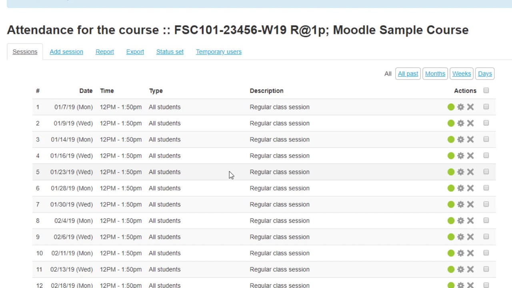
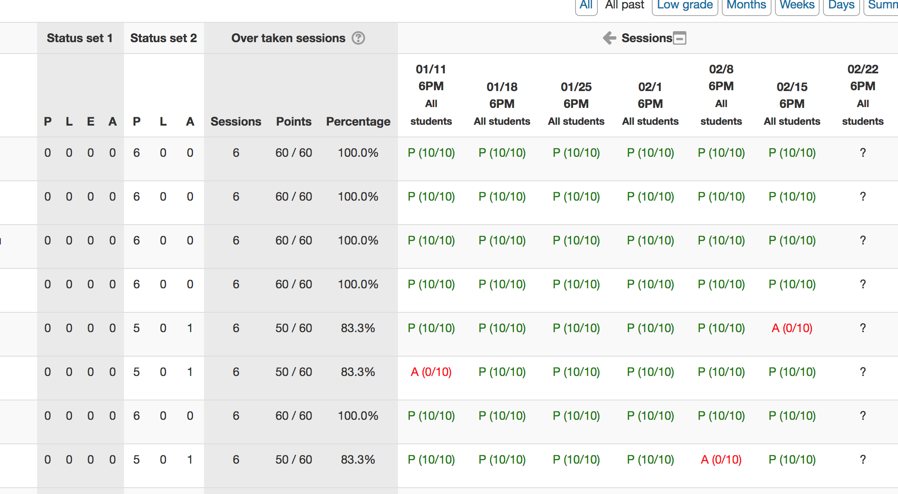
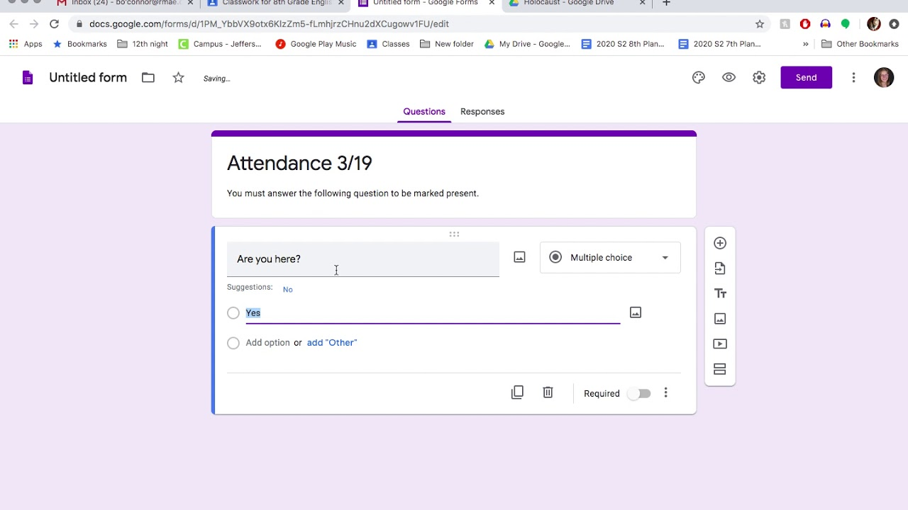
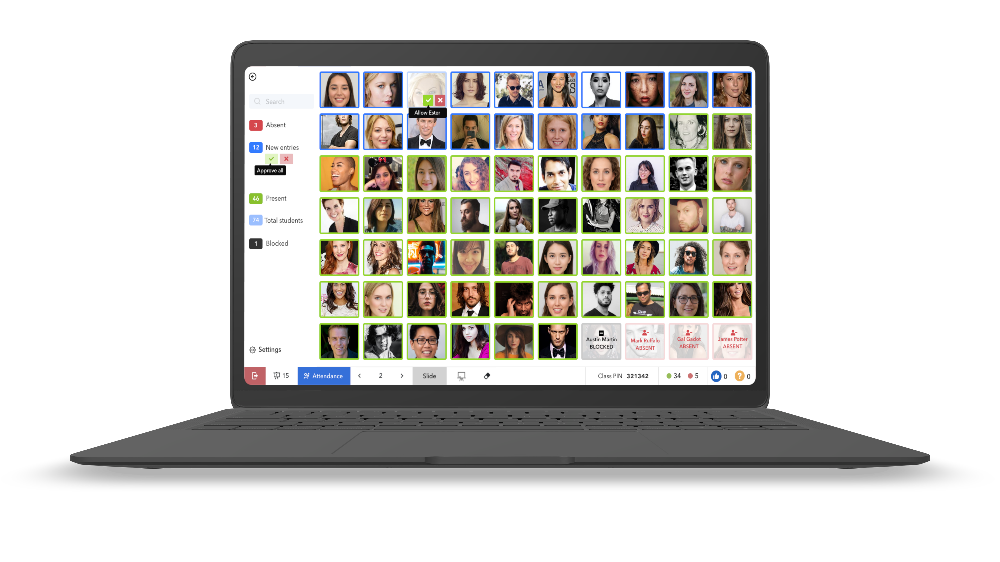
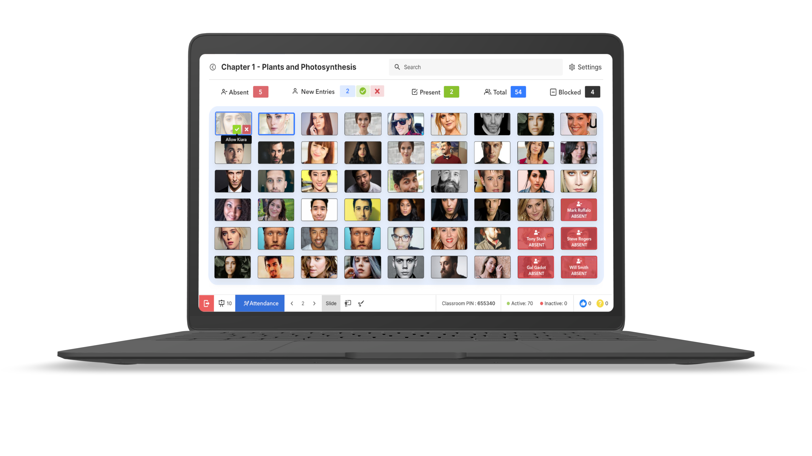
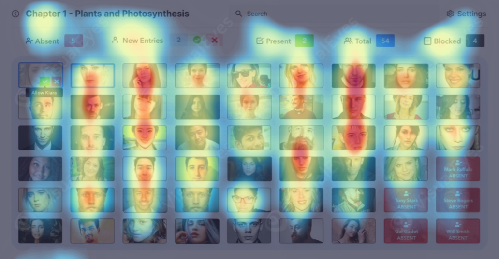
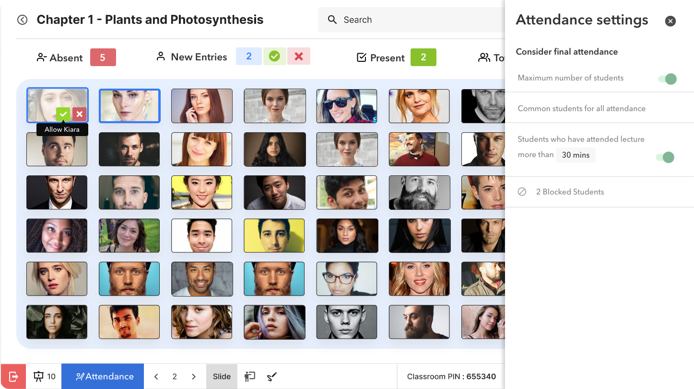

Designing Attendance Module in LearniCo
Goal
The goal was to create the online attendance module in LearniCo product after LearniCo's successful MVP launch.
About LearniCo
LearniCo is a techno-pedagogic innovation that creates smart classroom experience for college teachers and students and makes every session interactive.
Visit LearniCo Website.
RESEARCH - Understanding Problems
Let us see how teachers took attendance in the classroom setup
Before Covid
- Teachers called out names of students and noted their entires in attendance sheet
- The main problem in this system was student PROXY where in a student’s batch-mate would say “Present” on behalf of the student who is not present in the classroom.
- Teacher checks if the student is physically present in the class if the guess a proxy
{kind=link}
Our action plan to tackle the above problems was to setup biometric devices in the classroom.
In Covid
We gave demo to more than 800 teachers in Maharashtra about the product and there was 1 question that came up in at least 80% demo, the question was
“Can I take attendance with LearniCo? ”
When digging into the requirement of developing attendance module for online mode we captured below insights
- Students did not attend the entire class and appeared only during attendance time
- Students joined the class late by 15-20 minutes not paying respect to teacher’s time
- Since covid, teachers started online classroom sessions where it was tough for them to keep track of latecomers in the classroom
- Those teachers who took the attendance in first 10 minutes has very less students remaining by the end of the lecture
COMPETITOR RESEARCH
I performed a competitor research with the help of secondary data available on the internet where I checked how teachers take attendance from edu-tech products like Moodle and Google classroom and understood how they take attendance.
Moodle
Teachers developed course wise attendance sheets as shown below
Problem - It is not created for Indian College and Indian students, the teacher has to do data entry for the student manually which is very troublesome for Indian teachers.


Problem - It is not created for Indian College and Indian students, the teacher has to do data entry for the student manually which is very troublesome for Indian teachers.
{kind=link}
{kind=link}
Google Classroom
Most popular option amongst teachers for attendance. Teacher developed forms in google where they asked questions about what was taught in the class.
Problem - It fails to take attendance in Indian setup as students immediately share links of the google form with their friends who are absent in the class session.

Problem - It fails to take attendance in Indian setup as students immediately share links of the google form with their friends who are absent in the class session.
{kind=link}
IDEATION
It was required to release this feature in few weeks, for the same we arranged an ideation meeting, which included - The Product Manager, Program Manager and myself.
The ideation started off discussing about the problems and insights noted above and I was thinking how can teacher most easily conduct attendance with LearniCo.
The ideation started off discussing about the problems and insights noted above and I was thinking how can teacher most easily conduct attendance with LearniCo.
While I was empathising as teacher and recalling a situation where I had to see who all are present in a session an idea occurred to me. I recalled a recent event of my team mate’s farewell, which was conducted on google meet where I was searching who all were present in the farewell, this was when the idea of showing every student’s face came. I pitched in the idea and it was an instant favourite amongst my team members.
I was aware that we had already developed a face ID detection module for the student mobile application, so this faceID module, which was already developed came in handy to recognise faces of students in the class for attendance.
Empathising with teacher’s other problems we decided to have a settings interface, with the following features
- Teacher can decide the minimum lecture duration that student must have attended to mark student as “PRESENT” in the system.
- System can suggest the common students who were present at all instances of attendance
- System can suggest maximum number of students from all attendance instances
On the online classroom session page, we decided to show the attendance button, which will be easily available for teacher to click on it. The attendance button allowed
- Teacher to select any of the attendance instances from the summary
- Teacher to take attendance anytime in entire session
At technical level I suggested we take screenshot of the attendance screen which will be captured by system which can show the teacher who all were present in the classroom at all instances, this way we didn’t have to store the names of all students during attendance summary.
To validate the idea with teachers I quickly created a prototype and shared it with my team and senior members and junior designers for open feedback.
PROTOTYPES and ITERATIONS
There were 3 different designs that I created. The information delivered in these 3 prototypes were
- Count of all Students
-
New entries of students
- Bulk approving all new entries
- Rejecting all new entires
- Showing the absent students
- Showing present students
- Showing blocked students
- Settings information
- Option to individually approve/ reject/ block/ unblock a student
- Name of student
- The labels are clickable tabs which show filtered data of present, absent & new entries of student
Design 1 - Showing names of all students. This design was not proving helpful for viewing student’s live photo. So I created a 2nd design.

Design 2
The focus of this design was to show all the interactive tabs on the left side of the screen so that teacher can easily take a glance at all of them and decide to click on any of the required tab.
The most interactive part was placed on top left which is the Absent, on clicking it teacher can see all the absent students in the class. The student names were shown on tooltips with option to allow or block the student

The focus of this design was to show all the interactive tabs on the left side of the screen so that teacher can easily take a glance at all of them and decide to click on any of the required tab.
The most interactive part was placed on top left which is the Absent, on clicking it teacher can see all the absent students in the class. The student names were shown on tooltips with option to allow or block the student
{kind=link}
Design 3
Horizontal tab view layout, this layout was created to have clear navigation amongst different tabs & enough space for searching student names. It was also needed to give most importance to the left most label “Absent” students and least importance to the right most tab i.e. Blocked students. The most interactive element being the Absent student count was in the left most part of the screen. All the labels act as filters.
The search was dominant in this design compared to Design 2.

Horizontal tab view layout, this layout was created to have clear navigation amongst different tabs & enough space for searching student names. It was also needed to give most importance to the left most label “Absent” students and least importance to the right most tab i.e. Blocked students. The most interactive element being the Absent student count was in the left most part of the screen. All the labels act as filters.
The search was dominant in this design compared to Design 2.
{kind=link}
TESTING & FEEDBACK
I analysed heat maps for understanding area of attention and the results were evident.
The Design 3 from prototype was a clear winner as it gave the required tabs, i.e. Absent Students, Present Students, New entries and Total more attention than Design 2
The Design 3 from prototype was a clear winner as it gave the required tabs, i.e. Absent Students, Present Students, New entries and Total more attention than Design 2

Winner - Design 3

{kind=link}
We presented the winning design to 5 teachers from 2 different colleges, and they very well appreciated the design
Prof. Preeti Bambre (HOD) - K.K.Wagh College, Nasik
“This is just what I needed. Waiting to use this in LearniCo’s next release.”
Prof. Rajasmita Panda - Alard College, Pune
“Excellent solution for attendance problem. Great use of technology. ”
NEXT ITERATION
We came up with 2 segregations for category of students who are not allowed to attend the class
- Blocked - Where in a student from another class joins a class by mistake. This student is permanently not allowed to join the class.
- Rejected (New Concept) - Rejected students are those students who belong to the current class but the teacher has removed them from class.
{kind=link}
In the next iteration we added the blocked students view inside settings, if teacher requires to unblock students, they can do so by clicking on the blocked students list item.

{kind=link}